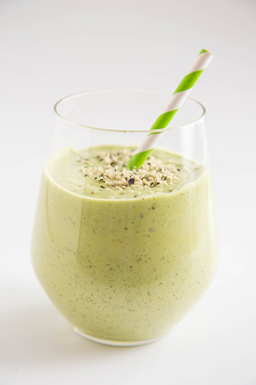

Workout
These fresh and vibrant homemade protein shakes (no protein powder necessary!) are just the thing to fill you up when you need a quick breakfast on the go, or a boost to get you through the afternoon.

Healthy Living
From there, each shake will take on its own style and flavor with the addition of fruits, veggies, nuts, and seeds. Each shake also includes a natural sweetener, in the form of dried pitted dates or a spoonful of agave. These ingredients are also interchangeable, or if you prefer, you can leave the extra sweetener out altogether.